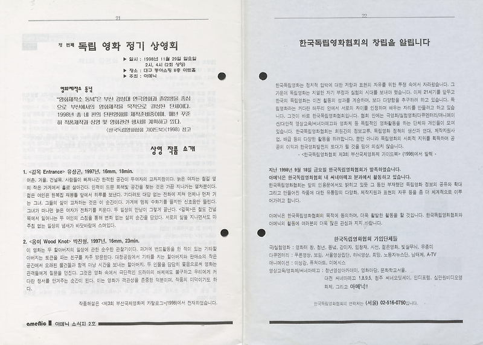

매거진 삼삼오오 · 연재
대구 시네마테크 운동 밑그림 그리기: 이영은과의 대화 - 3

대구 시네마테크 운동 밑그림 그리기 : 이영은과의 대화
대구영화발굴단
(김주리, 금동현, 류승원, 이라진)
3. ‘실패’에 대하여
김 : 앞서 90년대의 풍경이나 당시의 제도권 등등에 대해서 이야기를 나누어 주셨는데요. 아까 잠시 휴식 시간에 선생님께서 어떤 ‘실패’와 관련해서 말씀해 주실 것이 있으시다고 하셔서 그것부터 좀 청해 들으면 어떨까 하는 생각이 듭니다.
이 : 제가 지금 그때를 생각해 봤을 때 뭔가 새로운 시도는 그 자체로 가치 있고 또 되게 의미가 있지만 그 시도를 구체적으로 만들어가는 과정에서 상상했던 것이 있잖아요. 이를 테면 나는 내가 A라는 목적을 위해서 이렇게 B라는 수단을 쓸 거야라고 했을 때 실제 그 수단이 A라는 목적을 이루지 못할 때도 많잖아요.
저희가 더 이상 후원을 제대로 받지 못하거나 해서 기반이 되는 공간이라든가 돈 같은 게 없었지만은, 재능이 있고 영화에 대한 열정과 그다음에 좋은 내용들을 주고받았으니까 젊은이들이 이제 '제7예술'과 '씨네하우스'를 다 떠나서 으샤으샤해서 '아메닉'을 만들었고, 이렇게 일상적으로 정기 상영회를 할 수 있는 그런 단체를 만들면 우리는 뭐든지 다 잘할 수 있을 거야라고 생각을 하고 다양한 상영 활동을 했어요. 그런데 관객이었던 우리가 이제 이렇게 상영회를 하는 일종의 제3의 주체가 되었는데, 거기에서 과연 애초에 내가 관객으로서 느꼈던 그 갈증이나 아니면은 원했던 가치를 만드는 걸 했느냐라는 질문을 던져보면 (그것에 관해서는 일련의 일들이) 좀 소홀해지는 과정이었겠구나 라는 느낌이 있어요. 그거를 뭐 때문에 느꼈는지 그 에피소드를 알려드릴게요.


이 : 뭐냐면 우리가 1998년에 활발하게 되게 재미있게 다양한 상영회를 했어요. 수입이 안 되는 것도 하고, 독립 영화도 하고, 애니메이션도 하고, 막 여기 이렇게 동성 아트홀도 빌렸다가 저쪽에 어디 여러 군데, 게릴라적으로 그냥 상영 공간이 될 만한 데는 다 다니면서 했거든요. 그러다가 이제 우리는 돈도 벌면서 이걸 하면 좋겠다 생각해가지고 애니메이션을 상영했다가 벌금을 몇백만원을 물고 이러면서 수익화도 안 됐고, 그다음에 과연 우리가 재밌다고 생각해서 하고 있는 이게 꼭 필요한 걸까에 대한 의문이라든가 여러 가지 고민들이 생겼어요.
그 와중에 우리는 모두 너무 젊었으니까, 그때 제가 22~23살이었을 거고 우리 대표했고 사무국장 했던 선배들은 저보다 한두 살씩 많았단 말이에요. 20대 중반의 그 젊은이들이고 하면 직업에 대한 고민 같은 게 있었으니까 누군가는 이제 (‘아메닉’에서) 중심적인 활동을 할 때 누군가는 난 좀 더 공부를 해야 겠다 해서 공부를 하기 위해서 떠나고 그랬어요. 그리고 사실은 상근자가 없어가지고 영화제를 계속하거나 그런 활동을 못할 위기였어요.
근데 그때 그 상황에서 제가 이제 손들고 저 학교 때려치우고 제가 할게요 라고 했죠. 저는 내가 할 수 있는 걸 뭐라도 해야 된다, 나는 다른 능력이 부족하다 이런 생각을 너무 해서 항상 표를 열심히 팔고 이런 활동을 했으니까, 상영을 하는 데 필요한 인력으로서는 그런 잡일을 하는 일이면 충분하다고 생각을 해버린 것 같아요. 저는 넓게 보고 그러지를 못했고 그냥 우리가 했던 게 소중하니까 계속 해야지 라는 생각을 했던 것 같아요. 심지어 네가 그렇게 희생하지 않아도 된다고, 네가 이런 생활을 하길 원하지 않는다고 선배들이 얘기했지만 제가 좀 우겼거든요. 선배들은 거기에 대해서 미안해했고 고마워했어요. 우리 모두 '아메닉'이 그전과 같은 활동을 더 하기를 바라는 마음이었지만 이제 이런 활동은 더 이상 안 맞는 것 같다는 판단을 못했어요.
그다음에 1999년에 1년 동안 되게 굵직굵직한 독립 영화 상영회 같은 걸 했죠. 사실 되게 가치 지향적인 내용들이었고요. 계속해서 사람들을 모아가지고 소규모 영화 모임 같은 것도 계속 했었어요. 꾸역꾸역 했어요, 제 기억에는. 일정 잡고 모이면 이제 영화 보고 돌아가면서 얘기하고 이런 식으로 했는데.
그다음에 그냥 그러다가 제가 개인적으로 관리를 잘 못해가지고 큰 병이 나서 결국 저도 마지막에 그만두게 됐어요. 그러면서 어쨌거나 우리가 이런 상영회들은 당분간 못 하겠다는 판단을 했고, 일단 아름답게 ‘아메닉’의 2년간의 활동을 접자라고 해가지고 그 기록을 남겼어요. 사람들한테 모두 하나하나 다 물어보고 그랬어요. 정말로 회원들이 다 와줬어요. 그래가지고 성대하게 막을 내렸거든요.
그리고 그때 초대 대표였던 김희경 언니가, 그 분은 기본적으로 뭔가 이렇게 사람들하고 소통하고 모임을 만들고 판을 만들고 그런 거에 되게 능하고 재능이 있었던 사람인데요, 지금부터 몇 년 전이더라, 그때로부터 한 십여 년이 흐른 후에 멀리 살다가 뜨문뜨문 한 번씩 만날 때 그 분이 했던 얘기가 그때 우리가 그냥 너 혼자 고생하게 하지 말고 예전에 했던 활동처럼 모여가지고 우리끼리 모임을 하면서 그때그때 내용이 좀 갖춰지면 꼭 필요한 거를 하는 그런 게릴라적인 활동들을 좀 더 하는 방향으로 갔으면 우리가 좀 더 나은 걸 할 수 있지 않았을까 라고 언니가 나한테 미안한 마음을 담아서 그 얘기를 했어요.
저는 그때 내가 얼마나 잘못된 판단을 내렸는지에 대해서 생각하면서 진짜 너무 가슴이 아프고 너무 선배들한테 미안했었거든요. 근데 결국은 그 결정은 우리 모두가 함께 내린 거잖아요. 제 고집을 꺾지 않고 받아준 것도 그 선배들의 결정이고, 고집을 세운 저도 또 나름의 애정을 가지고 했던 행동이었고요. 이렇게 우리의 젊었던 치기로는 세상 전체를 보거나 더 큰 흐름을 보기에는 좀 부족했던 지점이 있었던 것 같아요. 그러니까 뭔가를 아니라고 반대하고 한다면, 그와 다른 걸 하면 그게 다 괜찮을 것 같은데, 사실 세상의 일은 그렇지 않구나 라는 것을 배우게 되는, 어떤 젊은 시절에 한 장면이었다는 생각 정도는 들거든요.
그리고 이렇게 세상의 흐름을 볼 때에 이영은이라는 사람, 또 원승환, 서영지, 김희경이라는 사람이 그때 그 '아메닉'을 그만두는 것은 실패일 수 있지만, 또 다른 사람들이 또 다른 방식으로 뭔가를 해나가는 게 있지 않을까 찾아보기도 하고요. 또 지금 현재의 사람들이 20여 년 전에 그거를 봤을 때에 그 실패를 당당하게 비판해도 되게 좋을 것 같아요. 그럼으로써 내가 더 나은 현재를 일굴 수 있다 그러면은요. 그래서 그냥 심지어 실패했던 당사자인 우리조차도 우리의 실패는 안타까운 거였어, 방법이 잘못된 부분이 있었구나 라고 명확하게 인지했다는 거를 지금 좀 알려드리면 좋을 것 같아요.
그러니까 제가 이게 어떻게 연결될지 잘 모르겠는데, 정말로 제도가 한국 영화를 오히려 보호하기까지 하는, 그래서 자생력을 떨어뜨리는 그런 곳으로 가게 되면서 관객 문화라는 것은 찾기 어렵구나 혹은 사라졌구나 하지만, 사실은 여전히 그런 활동을 하고 계시는 그분들이 지금 제 앞에 있는 여러분들이잖아요. 없는 걸 만들려는 사람들은 소수일 수밖에 없는 것 같은데, 이 소수가 적어도 내가 확신을 가지거나 내가 가치 있다고 느끼거나 내가 나의 삶에는 의미 있다는 뭔가를 만들어내기 시작하면 그 열매를 좀 더 많은 사람들이 같이 누리게 되는 게 세상의 변화의 일반적인 모습이라고 제가 얼마 전에 무슨 책에서 읽었거든요. 근데 정말 그렇다는 생각이 들어서 여러분들이 좀 더 힘을 내시면 좋겠고요. 그리고 저도 한동안 먹고 사는 데 치여가지고 좋아하는 상영회도 못 가고 그랬는데 그냥 저만의 관객 활동을, 오오극장에 영화 한 편 더 보러 가고 하는 그런 활동들을 조금 더 해봐야겠다는 그런 마음이 생기는 자리네요.
《 이영은과의 대화 4에서 계속됩니다 》